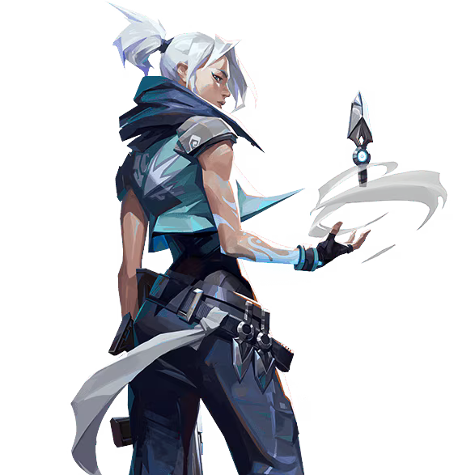

Jett

国籍: 韓国
ロール: デュエリスト
Jettは敏捷で素早い動きを活かし、敵を翻弄する能力に長けています。彼女のアビリティは、素早い移動と回避を可能にし、敵に予想外の攻撃を仕掛けることができます。
公式トレーラー
スキル
| スキル名 | 値段 | 所持上限 | 説明 |
|---|---|---|---|
| アップドラフト (Q) | 150 | 1個 | スキル使用でジェットを上に向かって飛ばす。高所に登るだけでなく、壁や遮蔽物を飛び越えるなど様々な使い方ができる。 |
| テイルウィンド (E) | 無料 | 1個 | 1回目の使用で準備状態に、2回目の使用でダッシュできる。ダッシュは前後左右に可能で、移動キーを入力することで操作可能。2回キルを獲得することで回復する。 |
| クラウドバースト (C) | 200 | 2個 | 着弾するとスモークを展開するけむり玉を投げる。スキルキーを押しっぱなしにすることで、マウスでけむり玉を操作可能。 |
| ドリフト | 無料 | - | パッシブスキル。空中でジャンプキーを長押しすることで滑空できる。アップドラフトや高所からの落下時にゆっくりと降りることができ、落下ダメージを受けないことも可能。 |
| ブレードストーム (X) - アルティメット | - | 5本 | 5本のナイフを構え、左クリックで1本ずつ、右クリックで構えているナイフを全て発射する。左クリックで敵を倒すとナイフが5本の状態に戻るが、右クリックで倒した場合は補充されない。 |
立ち回りとおすすめマップ
攻めの立ち回り
Jettはデュエリストなので、サイトに突入するエントリー役です。テイルウィンドで素早くサイトへ入れ、クラウドバーストを使ってサイト内で耐えることもできます。
守りの立ち回り
テイルウィンドで逃げることが可能なので、強気に勝負してワンピックを狙うことができます。前目に出てワンピックを狙い、人数差を付ける立ち回りが効果的です。
テイルウィンドのタイミング
守りでは、自分のタイミングで勝負できるとは限らないため、テイルウィンドの準備時間で敵に会えない可能性もあります。敵の足音などで接敵するタイミングを掴んで使用することが重要です。
オペレーターの使用
Jettはテイルウィンドでオペレーターの弱点を補えるため、積極的にオペレーターを購入することが推奨されます。
ULTでマネーを節約
Jettのアルティメットはキルが取れるので、武器を購入せずに戦うことでマネーを節約できます。エコラウンドでもマルチキルを取ることで有利になります。